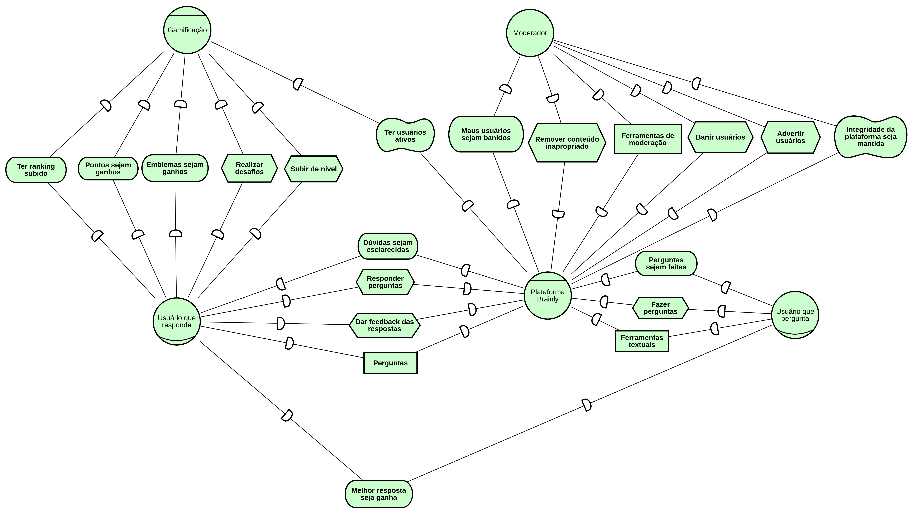
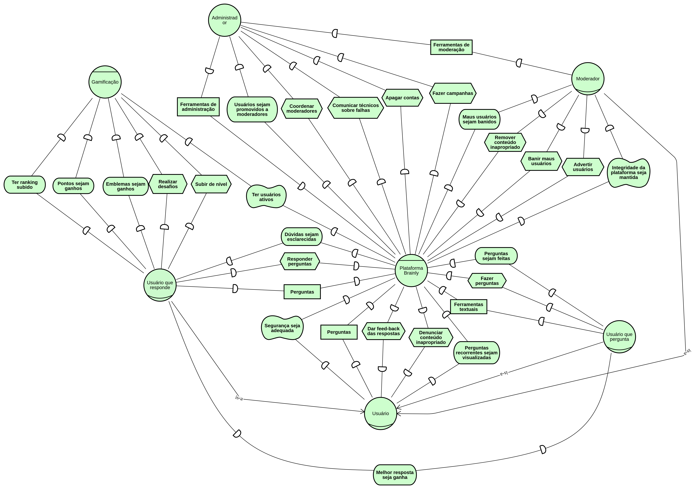
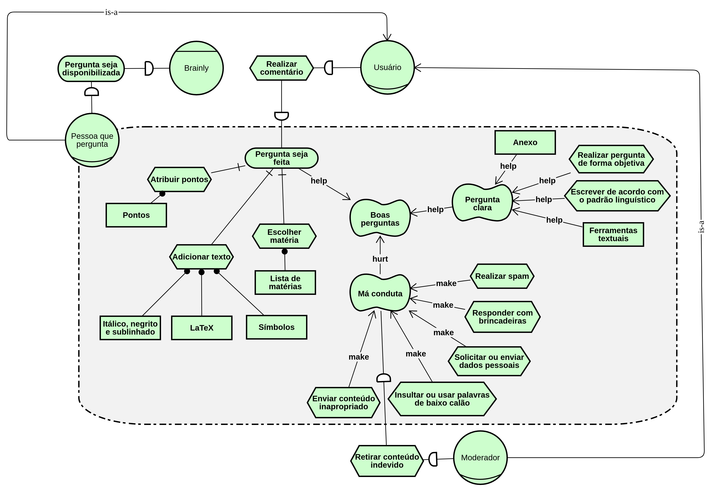
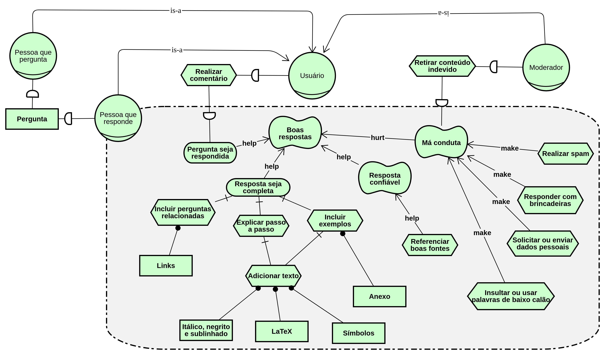
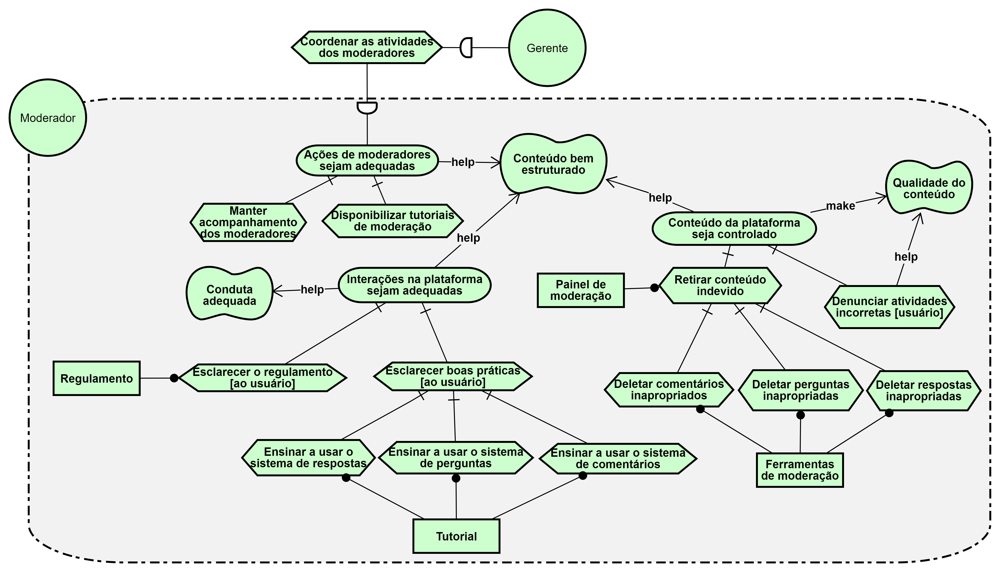
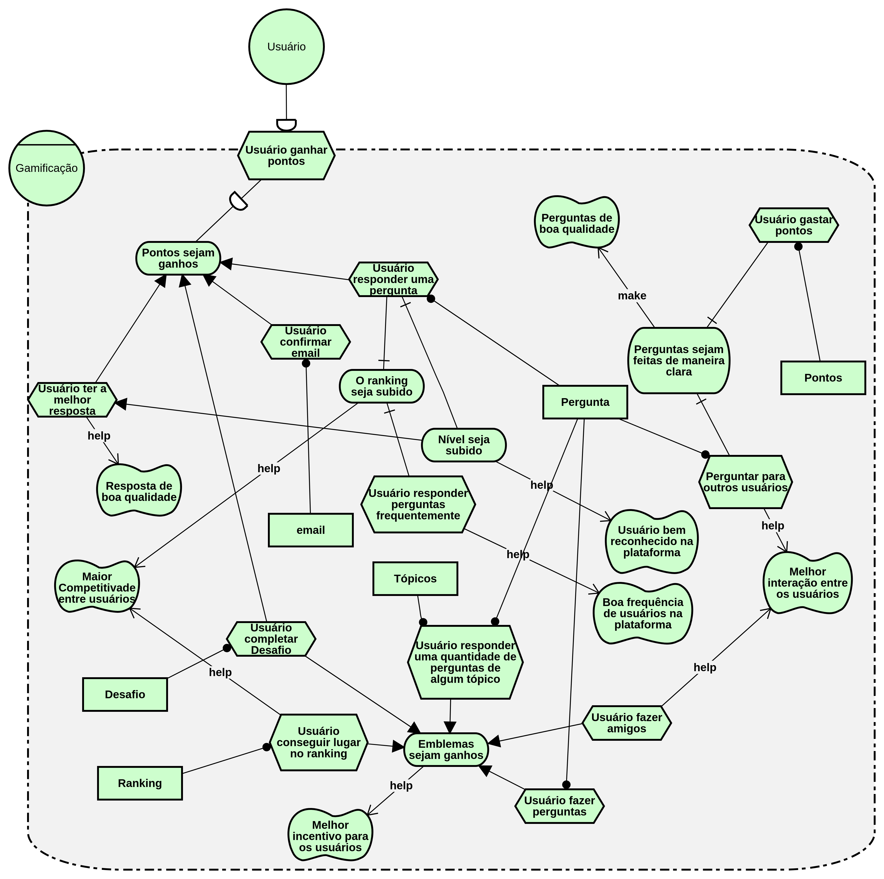

Istar
Versionamento
| Versão | Data | Modificação | Autor |
|---|---|---|---|
| 1.0 | 27/05/2019 | Adição do I* de dependencias | Gustavo Marques, André Pinto |
| 1.1 | 27/05/2019 | Adição do I* de moderação | Welison Regis |
| 1.2 | 28/05/2019 | Adição do I* da plataforma | Gustavo Marques, André Pinto, Leonardo Medeiros |
| 1.3 | 28/05/2019 | Adição da versão 2.0 do I* de dependências | Gustavo Marques, André Pinto, Leonardo Medeiros |
| 1.4 | 28/05/2019 | Adição da versão 2.0 do I* de moderadores | João Gabriel, Ivan Diniz, João Mateus, Paulo Rocha, Wellison Regis |
| 1.5 | 28/05/2019 | Adição da versão 2.0 do I* da plataforma | Gustavo Marques, André Pinto, Leonardo Medeiros |
| 1.6 | 28/05/2019 | Adição da versão 1.0 do I* de gamificação | Ivan Diniz, Paulo Rocha, João Gabriel, Leonardo Medeiros, João Matheus |
| 1.7 | 29/05/2019 | Adição da versão 1.0 do I* de realizar pergunta | Lieverton Silva, Welison Regis |
| 1.8 | 29/05/2019 | Adição da versão 1.0 do I* de realizar resposta | Lieverton Silva, Welison Regis |
| 1.9 | 29/05/2019 | Adição da versão 3.0 do I* de dependências | Lieverton Silva, Welison Regis |
| 1.10 | 29/05/2019 | Adição da versão 4.0 do I* de dependências | Gustavo Marques, Ivan Diniz Dobbin |
| 1.11 | 29/05/2019 | Adição da versão 4.0 do I* de dependências | Gustavo Marques, Ivan Diniz Dobbin |
| 1.12 | 29/05/2019 | Adição da versão 2.0 do I* de gamificação | Gustavo Marques, Ivan Diniz Dobbin |
| 2.0 | 21/06/2019 | Adição da versão 5.0 do diagrama de dependências gerais | Gustavo Marques, André Pinto |
| 2.1 | 21/06/2019 | Adição da versão 2.0 do diagrama de pergunta | Gustavo Marques, André Pinto |
| 2.2 | 21/06/2019 | Adição da versão 2.0 do diagrama de resposta | Gustavo Marques, André Pinto |
Introdução
O framework i propõe uma *abordagem orientada a agentes para engenharia de requisitos centrada nas características intencionais do agente, isto é, as metas, metas-flexíveis e outras abstrações. Os artefatos dividem-se no Modelo Estratégico de Dependência (SD) que apresenta uma visão mais geral do sistema e o Modelo de Raciocínio Estratégico** (SR) que especifica os subsistemas com os seus devidos atores.
Ferramenta utilizada para modelagem: piStar.
Metodologia
A metodologia ultilizada para o desenvolvimento dos i estrela foi a metodologia do pareamento com um membro da dupla realizando a tarefa e o outro auxiliando na realização da mesma, com a excessão dos primeiros modelos que necessitaram de uma atenção maior do grupo. A partir da versão 2.0 deste documento o método de correção partiu de uma análise previamente feita, que pode ser encontrada na página Análize iStar.
ISD01
Brainly - Geral v1.0

Brainly - Geral v2.0

Brainly - Geral v3.0

Brainly - Geral v4.0

Brainly - Geral v5.0

ISR01
Plataforma Brainly v1.0

Plataforma Brainly v2.0

ISR02
Modelagens Associadas: Casos de uso de perguntas e respostas, EP03, US16, US17, US18, US19, US20, US21, US22, US23, US24, US25.
Realizar pergunta v1.0

Realizar pergunta v2.0

ISR03
Modelagens Associadas: Casos de uso de perguntas e respostas, EP03, US16, US17, US18, US19, US20, US21, US22, US23, US24, US25.
Realizar resposta v1.0

Realizar resposta v2.0

ISR04
Modelagens Associadas: EP04, US26, US27, US28, US29, US30, US31, US32, US33, US34, US35, US36, US37, US38.
Moderação - Qualidade de conteúdo v1.0

Moderação - Qualidade de conteúdo v2.0

ISR05
Modelagens Associadas: Casos de uso de gamificação, EP06, US44, US45, US46, US47, US48.
Gamificação v1.0

Gamificação v2.0

REFERÊNCIA
[1] SERRANO, Maurício; SERRANO, Milene. Requisitos - Aula 20. 1º/2019. Material apresentado para a disciplina de Requisitos de Software no curso de Engenharia de Software da UnB, FGA.
[2] Pimentel, J.: piStar Tool - Goal Modeling. Disponível aqui. Acessado em 29 maio 2019.
[3] PUC-RIO. O Framework de Modelagem i*. In: PUC-RIO. Requisitos de Software. PUC-Rio: [s. n.], [2007?]. Disponível aqui. Acesso em: 29 maio 2019.